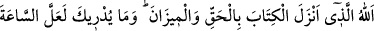
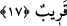

“Mücârât” sözlük olarak gitmek, birisiyle bir şeyi sürmek, kovmak gibi mânâlara
gelir.
Ayân beyân ortada olan Hakk’a karşı kibirlenip büyüklük tasladıklarından dolayı
“onlar için bir gazab, yine onlar için” inkârları ve uzak sapıklıkları için mâhiyet ve
künhü bilinmeyen “çetin bir” cehennem “azâbı vardır.”
Fakir Bursevî der ki: Allah’ın gazap ve azâbının sebebi şudur ki, hak din İslâm’ın
ortaya koyduğu hakîkatlar, rahmet ve nimet sebebidir. İnsanlar bu rahmet ve nimetten
yüz çevirince, bunların yerine Allah katında gazap ve azap buldular. Bu durumdan
Allah’a sığınırız. Bu kötü sonuç ise onların kötü hallerinin ve kötü amellerinin tabii bir
neticesidir.
Şâirin ifâdesiyle:
Bulut âb-ı hayât yağdırsa bile
Söğüt dalından meyve deremezsin.
Aşağılık kimselerle vakit geçirme,
Hasır kamışından şeker yiyemezsin.
17. Kitab’ı ve mîzanı hak olarak indiren Allah’tır. Ne biliyorsun, belki de kıyâmet
saati yakındır!
“Kitabı”, hüküm ve haberlerinde gerçeği bildiren ve bâtıldan uzak olan yahut
bildirilmesi zarûrî olan inanç esasları ve hükümlerle birlikte kitap cinsini “ve mîzanı”
kendisiyle hakların tartıldığı ve insanlar arasında adâlet ve eşitliğin sağlandığı şerîati
“hak olarak indiren Allah’tır.”
Mîzan (terazi) kelimesi “şerîat” anlamında mecaz olarak kullanılmıştır. Bu şekilde
şerîat, örfî mîzana/teraziye benzetilmiştir. İster Allah’ın hakkı, ister kulun hakkı olsun,
edası vâcip olan haklar bu terazide tartılıp eda edilir. Yahut Allah Teâlâ ilâhî kitaplarda
adâlet emrini indirmekle adâlet ve eşitliğin kendilerini de indirmiş olmaktadır. Bu sefer
adâleti mîzan olarak isimlendirmek bir şeyi onun âletinin ismiyle isimlendirmek
kabilinden olur. Zîrâ mîzan, adâletin âletinin ismidir.
Yahut da Allah Teâlâ tartı âleti olan teraziyi indirmiştir. Vezin ve tartı bir şeyin
miktarını bilmek demektir. Farsça ifâdesiyle “teraziyle ağırlıkları ölçersiniz, böylece
satıcıya da alıcıya da haksızlık olmamış olur.” Bu sefer mîzandan murad asıl mânâsı
olan terazi demek olur. Mîzan ve terazinin indirilmesi hakîkat olabilir. Çünkü rivâyet
edildiğine göre Cebrâil (a.s.) teraziyi indirip Nûh (a.s.)’a verdi. Ve ona: “Kavmine
tartıyı bununla yapmalarını emret” dedi. Adem (a.s.)’ın bütün sanat âlet ve vâsıtalarıyla